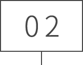
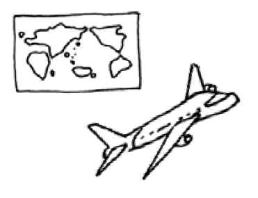
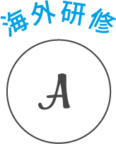

海外の言語、文化、情報…を
体感しながら学ぶ。
「サンドイッチ留学」と
「海外研修」
テクノスには、全学科の希望者を対象に
「サンドイッチ留学」と「海外研修」があります。
将来の目的や金額、期間から自分にあったプランを
選択することができます。
自分のプランにあわせた
留学プランを立てることができる
サンドイッチ留学
在学中、1年間休学して行うテクノスオリジナルな留学制度「サンドイッチ留学」。好きなミュージシャンに会いたい、スポーツトレーナーの最新情報を肌で感じたい、世界のホテルマンに会いたい！いろんなきっかけがあっていい！業界の最新情報や課題を、現地で見て、聞いて、感じたことがあなたを大きく成長させます。人気の留学先は、カナダ、イギリス、アメリカ・・・この経験は、あなたの未来の活躍の場を広げることになるでしょう。
「サンドイッチ留学」
の特長
-
語学力の
向上日本人スタッフに囲まれての留学やグループ留学ではありません。一人で行って、海外の学校に入学し、外国人の学生に囲まれて学習する、真の意味での留学です。しっかりと英語力を高めることができます。
-

無駄な費用は
なし留学中、学費納入は不要です。必要な費用は、航空運賃と留学校の学費、寮（またはホームステイ）費などです。テクノスには休学料を納入するだけです。
-
安心・安全な
学校だけを推薦推薦するのは、安心と安全、快適な環境を整えた学校だけです。一人で、しかも初めての留学には不安がつきものですが、本校では留学先として推薦する学校を事前に調査し、綿密な連絡を取り合って、情報交換を行い、学習面や生活環境面などすべてに万全の受け入れ体制を整えてもらっています。
留学までの
スケジュール
例：1年生と2年生の間に休学した場合
1年目
1年次カリキュラムを履修
留学希望者は、留学受け入れ校の資料閲覧や、相談・指導を受け、海外渡航や生活の予備知識等を学びます。
留学担当教員とじっくりカウンセリングをし、それぞれの目標や性格を踏まえて留学先や学校を決めていきます。資料の閲覧はもちろん、願書の記入やビザ申請、英語の勉強も行ないます。海外から語学学校のスタッフがテクノスに来校、「留学フェア」も実施しています。
※コロナ禍のため、留学を中止していますが、外務省海外安全ホームページをもとに留学可能かを判断しています。
●1年目スケジュール
- 6月
- 留学について概要説明会開催
- 7月
- 海外留学先資料の閲覧開始
- 9月
- 留学希望者個人相談開始
- 1月
- 留学手続き開始
- 2～3月
- 留学・休学手続き開始
2年目
海外体験(サンドイッチ留学)
目的に合わせ、留学先や留学期間は自由に設定できます。不安な点も留学担当の先生がサポートするので安心。
●2年目スケジュール
- 4～9月
- 休学し希望留学期間に応じ海外渡航開始
- 12～1月
- 留学先より帰国
- 3月
- 復学手続きと準備
復学に向けてカウンセリングを行います。
3年目
2年次カリキュラムを履修
留学経験で身につけた英語力と、2年間の専門知識・技術を最大限に活かして、就職活動に挑みまます。
●3年目スケジュール
- 4月
- 2年生に復学すると同時に就職活動開始
- 3月
- 卒業・就職
サンドイッチ留学先
の一例
留学生の声
日本では出来ない挑戦を!
エアトラに決めたきっかけは、サンドイッチ留学制度があったから。入学する前から留学に行くことは決めていました。ニュージーランドでは、勉強、アクティビティ、アルバイトなどさまざまなことに挑戦しました。勉強面では資格対策コースを受講。バックパッカーでの国内旅行やスカイダイビングは忘れられない思い出です。ニュージーランドは学生ビザでアルバイトができるので、とてもいい経験になりました。復学後のクラスは年齢もバラバラですが、お互いに情報交換をしあって切磋琢磨しています。少しでも興味があれば、エアトラならではの留学制度をぜひ利用して、留学にチャレンジしてみてください!

自分流の留学で、後悔ゼロ!
留学を決めたきっかけはとてもシンプル。「英語を話せるようになりたい!」という気持ちでした。マルタで勉強を始めたばかりの頃は会話に苦労しましたが、チェコ人の女の子から誘われて一緒に海へ行き、それがきっかけで一気にほかの人とも仲良くなれました。当初はマルタとイギリスの2か国留学を予定していましたが、TOEICスコアのアップのためにイギリスではなくフィリピンへの留学を決意。徹底的に勉強をし、470点アップさせることに成功!憧れの会社から内定をいただくこともできました。留学を終えても、マルタで出会ったトルコ人の友人と旅行をするなど、語学力だけでなく人間的にも大きく成長できた1年でした。
留学費用の一例授業料・滞在費(6ヶ月分)
アメリカ
トータル／約160万円
ニュージーランド
トータル／約130万円
カナダ
トータル／約120万円
イギリス
トータル／約165万円
- 〈授業料・滞在費以外に必要な費用〉
-
パスポート取得費用／学生ビザ取得費用／本校休学料 ※本校に学籍を残すため休学料が必要／航空運賃／生活費(通学交通費・通信費・食費等)／海外留学保険料
留学費用に関しては、渡航先や期間により異なります。ご希望の方は、教職員に相談してください。
-

3泊4日
費用
約80,000円※ -
3泊5日
費用
約150,000円～
200,000円※ -
3週間
費用
約350,000円～
450,000円※
※為替や国際経済状況に応じて費用が変更されることがあります。行き先の詳細は、入学後にお知らせします。
関連するその他の記事

キャリアTopics
一覧へ現在、Topicsはありません。